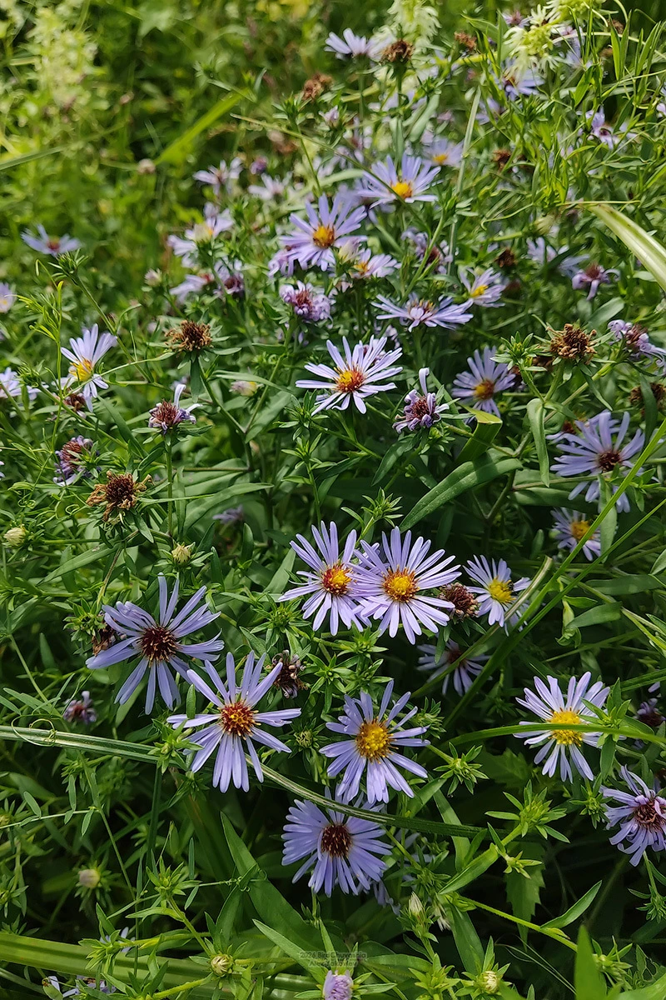

花卉与草本 · 植物界
荷兰菊 Symphyotrichum novi-belgii

菊科多年生草本，秋季开蓝紫或粉紫色小花，花量大、耐寒性强，是秋季花坛与切花的常见材料，原产北美。
- 分类
- 门被子植物门纲木兰纲目菊目科菊科属紫菀属
- 栖息环境
- 北美的湿润草甸与河岸，喜光、耐寒、喜湿润
- 地理分布
- 原产北美洲，中国各地庭园引种栽培
- 保护级别
- 暂无评估
物种志
荷兰菊为菊科紫菀属多年生草本，株高 50–100 厘米，茎直立，多分枝。叶片披针形至线形，互生。头状花序多数，密集成伞房状，直径 2–3 厘米，舌状花蓝紫、粉紫或白色，中央管状花黄色，花期 9–10 月；果实为瘦果。
荷兰菊原产北美洲，喜阳光充足、凉爽和排水良好的环境，耐寒性强，适应性强。它秋季开花、花量大，蓝紫色小花密集成片，是秋季花坛和切花的常见材料，也可用于花境后景和道路绿化。栽培以分株和扦插为主，生长期摘心可促进分枝、增加花量；花后剪除残花，有利于越冬和翌年萌发。
形态与习性
- 株高50–100 厘米，茎多分枝
- 花期9–10 月，花量大
- 果期花后结瘦果
- 光照喜充足阳光
- 水分喜湿润，忌积水
- 土壤疏松肥沃、排水良好的壤土
- 繁殖分株、扦插
- 主要用途秋季花坛、花境、切花
趣味知识
- 荷兰菊秋季开花，蓝紫色小花密集成片，花量很大。
- 它原产北美，耐寒性强，是秋季花坛的常见材料。
- 生长期摘心可促进分枝、增加花量。
- 花后剪除残花，有利于植株越冬和翌年萌发。